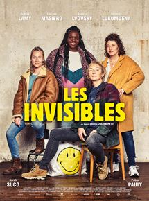

Jean-Christophe COEVOET
Programmer
Entrepreneur 360, avec une formation d'ingénieur et une expérience longue de commerçant
Favorites movies

|
BabysittingFaute de baby-sitter pour le week-end, Marc Schaudel confie son fils Remy à Franck, son employé, "un type sérieux" selon lui. Sauf que Franck a 30 ans ce soir et que Rémy est un sale gosse capricieux. Au petit matin, Marc et sa femme Claire sont réveillés par un appel de la police. Rémy et Franck ont disparu ! Au milieu de leur maison saccagée, la police a retrouvé une caméra. Marc et Claire découvrent hallucinés les images tournées pendant la soirée. |

|
Qu'est ce qu'on a fait au bon dieuLe retour des familles Verneuil et Koffi au grand complet ! Claude et Marie Verneuil font face à une nouvelle crise. Leurs quatre gendres, Rachid, David, Chao et Charles sont décidés à quitter la France avec femmes et enfants pour tenter leur chance à l’étranger. Incapables d’imaginer leur famille loin d’eux, Claude et Marie sont prêts à tout pour les retenir. De leur côté, les Koffi débarquent en France pour le mariage de leur fille. Eux non plus ne sont pas au bout de leurs surprises… |
|  |
InvisiblesSuite à une décision municipale, l’Envol, centre d’accueil pour femmes SDF, va fermer. Il ne reste plus que trois mois aux travailleuses sociales pour réinsérer coûte que coûte les femmes dont elles s’occupent : falsifications, pistons, mensonges… Désormais, tout est permis ! |